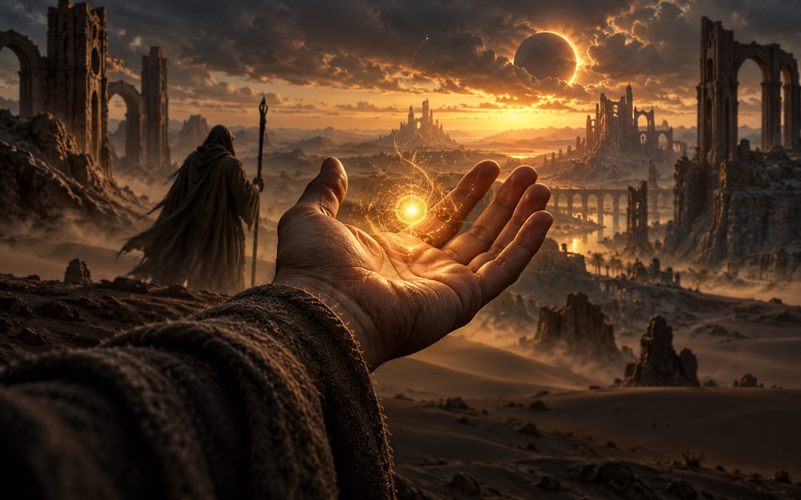

A story worth finishing
The sun has stopped. You are the Herald.
Guided by Kaleb, you carry the last Spark of the Heart of Dawn through eight realms toward the Eclipser — and learn what the old rite really costs. Painted cinematics, dialogue before and after every mission, bosses who talk back, a Chronicle that fills in as you play, and an ending you choose.